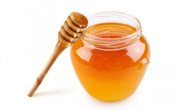

Unser Honig
Als Teil des Deutschen Imkerbundes vertreibt der Verein die Marke „Echter Deutscher Honig“.
Honig (lateinisch und apothekersprachlich Mel) ist ein von Honigbienen zur eigenen Nahrungsvorsorge erzeugtes und vom Menschen genutztes Lebensmittel aus dem Nektar von Blüten oder den zuckerhaltigen Ausscheidungsprodukten verschiedener Insekten, dem sogenannten Honigtau. Oft wird das Aroma eines Honigs durch den Nektar einer Massentracht dominiert, wobei sogenannte „Beitrachten“ dem Honig die besondere Geschmacksnote verleihen. 
Honige verschiedener botanischer Herkunft unterscheiden sich nicht nur in Geschmack, Geruch und Farbe voneinander. Auch das Spektrum an Wirkstoffen ist für jede Nektar oder Honigtau erzeugende Pflanze typisch.
Imker können nur bedingt Einfluss darauf nehmen, wo und was die Bienenvölker eintragen.